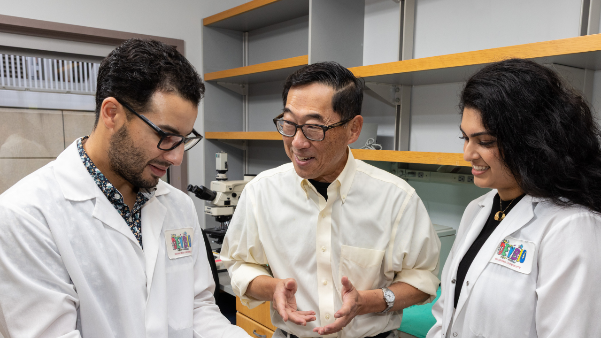

Suspiro
News
Suspiro
News

Stephan Ramos, Seung Kim e Preksha Bhagchandani
Pesquisadores da Universidade de Stanford, nos EUA, anunciaram uma descoberta que pode mudar a vida de milhões: a cura completa do diabetes tipo 1 em ratos, usando um transplante inovador de células pancreáticas e células-tronco sanguíneas. O melhor? Zero rejeição imunológica e nenhum efeito colateral, com os animais vivendo saudáveis por seis meses sem precisar de insulina ou imunossupressores
Essa façanha, detalhada no estudo publicado no Journal of Clinical Investigation, foi liderada por cientistas como Seung Kim, MD, PhD, professor de Stanford. "A possibilidade de traduzir essas descobertas em humanos é muito empolgante", celebrou Kim. O método cria um "sistema imunológico híbrido" que reconfigura a resposta autoimune, o vilão do diabetes tipo 1, que ataca as células beta produtoras de insulina no pâncreas
Por que isso é transformador? Diferente do diabetes tipo 2, o tipo 1 é autoimune e afeta principalmente crianças e jovens. Nos experimentos, o tratamento curou 9 de 9 ratos com a doença crônica e preveniu em 19 de 19 animais suscetíveis. Usando um pré-tratamento suave (testado em estudos prévios da equipe, como o de 2022), as células doadas se integraram perfeitamente, sem os riscos de radioterapia intensa comuns em transplantes para câncer.
A própria Stanford descreveu os resultados como "empolgantes" em seu site oficial (confira a notícia). "As células das ilhotas pancreáticas do doador têm 'dois alvos nas costas': são estrangeiras e o alvo da autoimunidade. Criar um sistema imunológico híbrido atinge ambos os objetivos", explicou Kim. A Dra. Judith Shizuru, da equipe, contribuiu com um pré-tratamento mais benigno, já promissor para artrite reumatoide e lúpus
Claro, o caminho para humanos tem desafios, como escalar o número de células e cultivar ilhotas em laboratório a partir de células-tronco pluripotentes. Mas os cientistas estão animados e trabalhando nisso. Essa é a ciência brilhando: um passo gigante contra doenças autoimunes, trazendo esperança real e fundamentada.